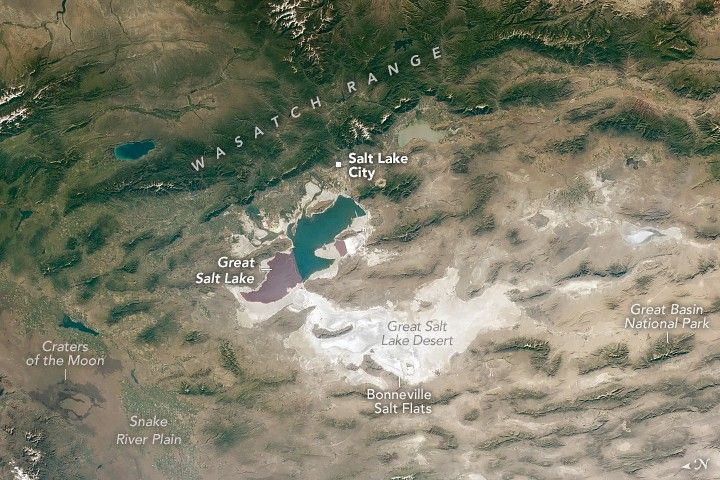

Sweeping Vistas Above the Great Salt Lake
An astronaut aboard the International Space Station captured this wide-view photograph looking nearly straight down over the Great Salt Lake in northwestern Utah. Salt Lake City is visible as small, rectangular tan and green strips between the lake and the Wasatch Range.
Craters of the Moon National Monument and Preserve, a lava field with more than 60 lava flows and a former NASA Apollo crew training site, lies north of the lake within Idaho’s Snake River Plain. Bright tan and white salt flats and drainage basins fill the low-lying areas visible in the image.
The lake lies within the eastern portion of the Great Basin Desert in the U.S. Southwest. Characterized by a temperate desert climate, the Great Basin Desert encompasses most of Nevada, about half of Utah (including the Great Salt Lake Desert), and extends into Oregon, California, and Idaho.
The green-toned, rugged Wasatch Range and the smoother, brown-colored Snake River Plain bound the Great Basin Desert on the upper and left sides of the image, respectively. Outside the frame, California’s Sierra Nevada bounds the basin to the west.
The Great Salt Lake displays two primary colors in this view: a burgundy-red northern arm and a blue-green southern arm. A railroad causeway forms a boundary between the two arms. In saline lakes, algae can alter the apparent color of the water, with different species determined by variations in salinity and temperature.
North of the railroad divider, the water is highly saline and mineral-rich, supporting pinkish-red phytoplankton. The southern arm contains lower salt concentrations and different algal communities, resulting in its green-blue appearance.
Adjacent to the bi-colored lake, the Bonneville Salt Flats extend westward. These salt flats are remnants of the ancient Lake Bonneville lakebed, which formed between 10,000 and 32,000 years ago.
The Great Salt Lake and surrounding light-toned salt flats contrast sharply with the darker, mountainous terrain. Astronauts have been captivated by these features for decades, capturing thousands of images of the region from Skylab (1973), the space shuttle (1992), and the space station (2017).